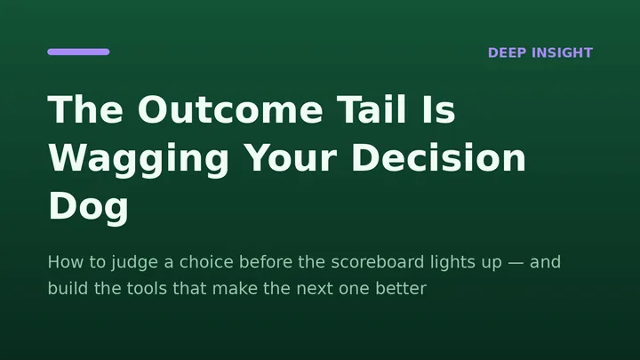
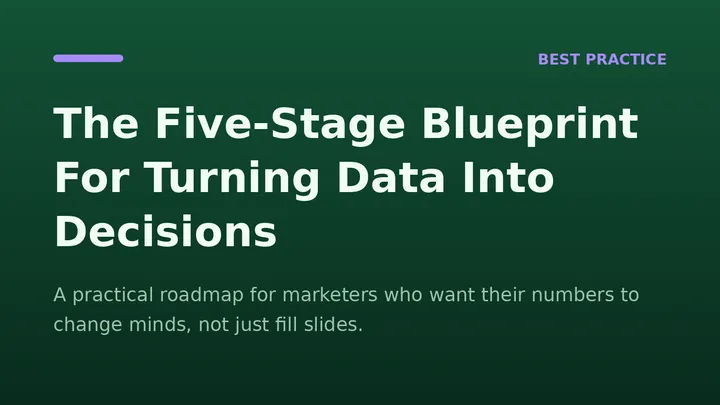
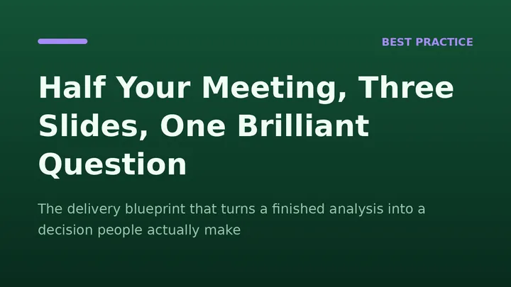
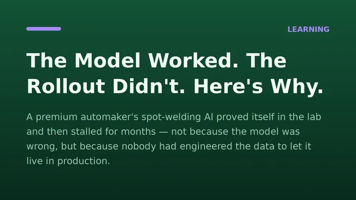
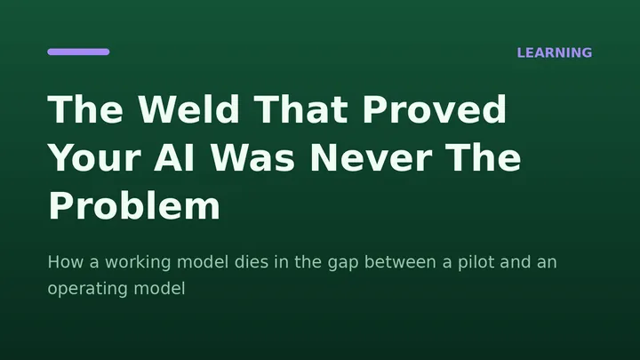

Every employee is quietly getting a different model: tuned to their phrasing, their shortcuts, their blind spots. That feels like progress until a meeting starts and five people arrive with five subtly different versions of the same fact. Shared context used to be the default cost of working together; now it has to be engineered on purpose, or it quietly disappears. The real infrastructure question isn't whose model is smartest, it's whose model everyone agreed to trust first.
Substack
Des idées entre les chapitres
Des outils plus intelligents, un jugement plus affûté : notes et publications sur l’art de mieux décider avec la data et l’IA, directement depuis le Substack de l’auteur.
Dernière note
Notes
Réflexions courtes et travaux en cours, entre deux publications.
Lire la note sur Substack (s’ouvre dans un nouvel onglet)
Voir toutes les notes sur Substack (s’ouvre dans un nouvel onglet)
Dernières publications
Publications
Les cinq publications les plus récentes. Chacune s’ouvre sur Substack.
-
Payant

The Outcome Tail Is Wagging Your Decision Dog
How to judge a choice before the scoreboard lights up — and build the tools that make the next one better
Lire sur Substack (s’ouvre dans un nouvel onglet) -

The Five-Stage Blueprint For Turning Data Into Decisions
A practical roadmap for marketers who want their numbers to change minds, not just fill slides.
Lire sur Substack (s’ouvre dans un nouvel onglet) -
Payant

Half Your Meeting, Three Slides, One Brilliant Question
The delivery blueprint that turns a finished analysis into a decision people actually make
Lire sur Substack (s’ouvre dans un nouvel onglet) -

The Model Worked. The Rollout Didn't. Here's Why.
A premium automaker's spot-welding AI proved itself in the lab and then stalled for months — not because the model was wrong, but because nobody had engineered the data to let it live in production.
Lire sur Substack (s’ouvre dans un nouvel onglet) -
Payant

The Weld That Proved Your AI Was Never The Problem
How a working model dies in the gap between a pilot and an operating model
Lire sur Substack (s’ouvre dans un nouvel onglet)
Tout lire sur Substack
Les nouvelles publications et notes y paraissent en premier. Abonnez-vous pour les recevoir par e-mail.